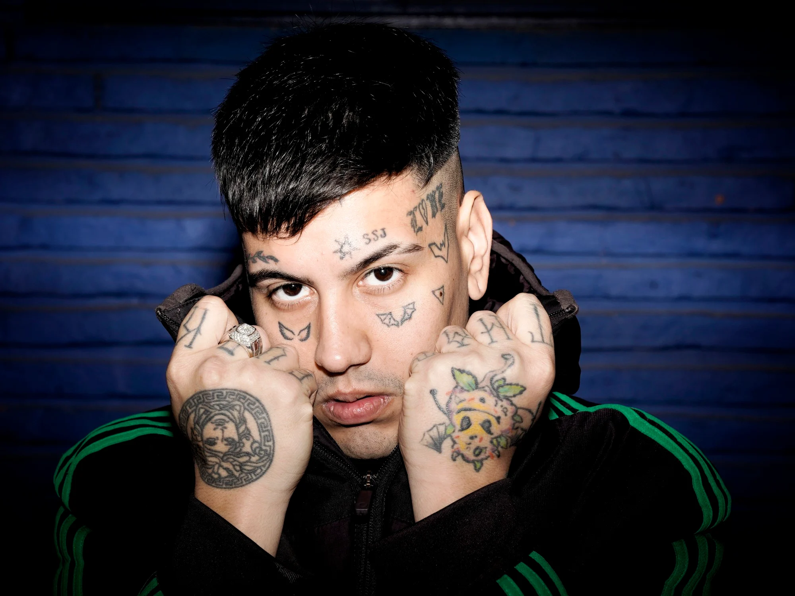

Duki
Mauro Ezequiel Lombardo Quiroga
Mauro Quiroga (Almagro, Buenos Aires, 24 de junio de 1996), conocido artísticamente como Duki, es un rapero y compositor argentino. Es reconocido por haber popularizado el género del trap en la música mainstream hispanohablante a fines de la década de los 2010, y por su utilización del autotune en sus vocales y sus ganchos melódicos en su estilo de rapeo. Mauro surgió de sus participaciones en las batallas de rap, en especial de la competencia El Quinto Escalón, la cual al volverse un fenómeno viral en YouTube, le dio su primera cuota de popularidad cuando se proclamó campeón en 2016; su victoria significó que pudiera lanzar su primer sencillo y trabajar con el productor discográfico Omar Varela un par de meses después. En 2017, irrumpió en la escena musical argentina con su primer sencillo exitoso, She Don't Give a FO, y al año siguiente formó parte del supergrupo "Modo Diablo" junto a los raperos YSY A y Neo Pistea, cuyos sencillos Quavo y Trap N' Export ayudaron a popularizar y formar un masivo culto de seguidores alrededor del género del trap en Sudamérica.
